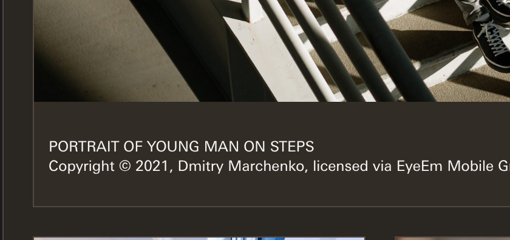

02 · The Supercharge caption
Today nobody can see it. It would show only if canon.css failed to load.
The line that changes is the fallback colour in var(--color-neutral-5, …). With canon loaded, both pages paint the right warm caption, pixel for pixel. The fallback only paints when canon.css is missing, for example in a pack export or a page opened outside the repo. It is the safety net, and the regenerated version would fill that net with the wrong colour.

paints rgb(49, 44, 38), which is #312C26

paints #312C26 too. The two PNGs are byte-identical.
falls back to #312C26, the warm lift you ruled
falls back to #313131, Mono's grey: the regression
- The rulings220-D1 (27 August): each theme's dark caption lifts off its own dark page, taken from its own ramp. Supercharge takes its warm 5,
#312C26. You closed it this morning as s308-D1: "Close it: the four lifts are right." The committed pages carry that value. - What brokeThe generator's colour reader,
theme_tokens()ingen_bento_matrix_217.py. It takes the first[data-apollo-theme="supercharge"]{block in canon.css. Since commit71b3363c(the #288 capture, 19 September), that first block is the bento spacing block, which holds two spacing values and no colours. Console has the same fault, but its caption is grey anyway, so nothing shows. - Worse for CommonSince commit
53303b0f(#228, 31 August), the Common theme block has opened with a two-line selector (legacy,common), and the reader matches none of it. For Common the reader has returned Mono's values for a month. Its badge, for example, reads Mono's error red and not Common's#DB0011. Common's caption grey happens to equal Mono's, which is why it did not show here. - The proofI mended the reader in memory only, so that it gathers every block that names the theme. With that fix, seven of the eight pages regenerate byte-identical to the committed ones, and the eighth differs only in its logos. No other cause is hiding.
- Seen beforeLane W2 named this reader fault on 27 September (#305), while holding the rails file. It said Common was "spared". Common is in fact the most affected theme. No work row was opened for the fix.
Recommendation: fix the reader, not the pages. The pages already say what you ruled.